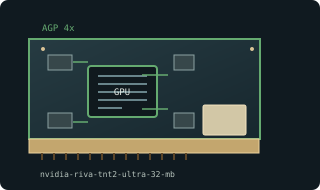

[ AGP-ERA GRAPHICS CARDS // IDENTIFIED COMPONENT ]
NVIDIA RIVA TNT2 Ultra 32 MB AGP
TNT2 Ultra graphics processor, 1999. This entry identifies one specific product configuration; closely named models and partner-board variants are distinguished below.

MODEL IDENTIFICATION: TNT2, TNT2 M64, and TNT2 Ultra are not interchangeable; M64 has a narrower memory interface. Check AGP keying and motherboard voltage support; never force incompatible 3.3 V card into a 1.5 V slot.
Recorded specifications
| Cataloged product | NVIDIA RIVA TNT2 Ultra 32 MB AGP |
|---|---|
| Generation / chip | TNT2 Ultra graphics processor, 1999 |
| Core & memory | TNT2 Ultra variant; 32 MB SDR SDRAM reference configuration; 128-bit memory interface; 150 MHz core and 183 MHz memory reference clocks. |
| Host interface & I/O | AGP 4x card, backward compatible with suitable AGP 2x signaling/voltage; analog VGA, with board partner DVI or TV-out variants. |
| Variant boundary | TNT2, TNT2 M64, and TNT2 Ultra are not interchangeable; M64 has a narrower memory interface. Check AGP keying and motherboard voltage support; never force incompatible 3.3 V card into a 1.5 V slot. |
| Archive record | Photograph label and PCB revision; record BIOS, driver version, adapters, physical condition, and source-document revision used to verify specimen. |
Compatibility & service notes
Ultra is a higher-clocked full-interface TNT2. Memory speed, capacity, and outputs depend on manufacturer SKU.
Record BIOS and board vendor before flashing. Check aging capacitors and fan bearings; use period-correct drivers and test analog output at conservative refresh rates.
- Check slot signaling, keying, lane width, auxiliary power, clearance, and PSU requirements; physical insertion alone does not prove compatibility.
- Use drivers supporting this device ID and OS release. Preserve original driver/firmware before updates and record source.
- Do not energize cards with cracks, corrosion, damaged power sockets, obstructed fans, or suspected shorts; inspect before bench testing.
Manufacturer & standards sources
- NVIDIA legacy graphics / driver archiveUse alongside the exact board label and revision; archived family data may not describe every OEM implementation.
- Intel AGP specification archiveUse alongside the exact board label and revision; archived family data may not describe every OEM implementation.
- RIVA TNT2 Ultra model specificationsUse alongside the exact board label and revision; archived family data may not describe every OEM implementation.
Specifications describe the cataloged reference configuration only. Manufacturer manuals and physical product label take precedence for a specific OEM revision.